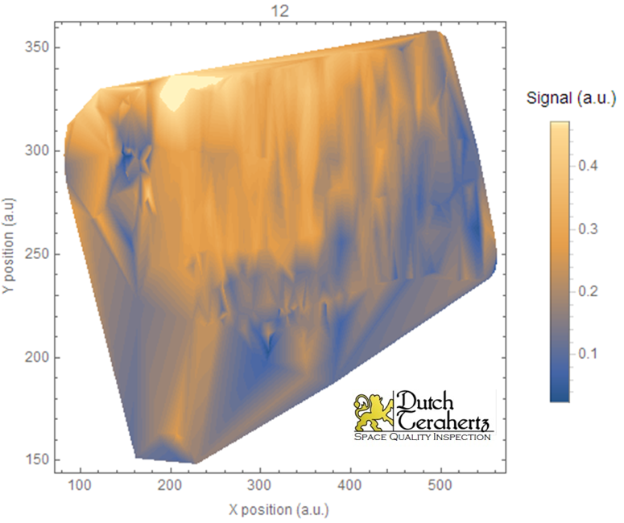

Terahertz Instrumentation for Integrity Inspection of Marine Composite Assemblies
 Apart from the space and astronomical research, Terahertz radiation is successfully used for the non-destructive testing and condition monitoring of the dielectric composite materials,which are often used in aerospace, marine, offshore, nuclear, medical, etc., industries. Let's discuss the project particularly dedicated to terahertz inspection of marine composite assemblies. A marine composite assembly under test has the following composition. The upper layer consists of monolithic glass fibre-reinforced plastic (GFRP), followed by a foam as a core material with resin as epoxy, polyester and vinyl ester. The bottom layer is monolithic carbon fibre-reinforced plastic (CRFP). In the assembly described, and based on the obtained THz data, the following defects need to be identified: porosity (voids are trapped between the layers), delamination (two plies are split apart), cracks, voids (pores between two plies) and weak bonds (poor quality of the interface between the adhesive and the adhered foam).
Apart from the space and astronomical research, Terahertz radiation is successfully used for the non-destructive testing and condition monitoring of the dielectric composite materials,which are often used in aerospace, marine, offshore, nuclear, medical, etc., industries. Let's discuss the project particularly dedicated to terahertz inspection of marine composite assemblies. A marine composite assembly under test has the following composition. The upper layer consists of monolithic glass fibre-reinforced plastic (GFRP), followed by a foam as a core material with resin as epoxy, polyester and vinyl ester. The bottom layer is monolithic carbon fibre-reinforced plastic (CRFP). In the assembly described, and based on the obtained THz data, the following defects need to be identified: porosity (voids are trapped between the layers), delamination (two plies are split apart), cracks, voids (pores between two plies) and weak bonds (poor quality of the interface between the adhesive and the adhered foam).
 Our custom made Terahertz set-up allows two types of image to be constructed, amplitude and phase, which provide the information about the size(s) and depth(s) of the defect(s) under investigation. The amplitude image provides information about the intensity of the reflected THz radiation. The phase image provides information about the delay of THz radiation via specimens and the dielectric properties of the material under investigation to be detected. For example, changes in the amplitude and the phase of the THz radiation transmitted via a sample allow its material properties, such as the refractive index, absorption coefficient and thickness, to be characterised.
 On the righ, THz image in reflection mode of the discussed marine composite assembly under test at a depth of a few millimetres is shown. The lower reflections (depicted as dark blue areas) indicate the presence of the defects and the higher reflections (depicted as yellow areas) indicate the ‘zero defect’ zone. On the left, an RGB image of the marine assembly under test with a transparent overlay of the obtained THz image in reflection mode is depicted. The dashed red line indicates the damage area detected by ultrasonic inspection.
On the righ, THz image in reflection mode of the discussed marine composite assembly under test at a depth of a few millimetres is shown. The lower reflections (depicted as dark blue areas) indicate the presence of the defects and the higher reflections (depicted as yellow areas) indicate the ‘zero defect’ zone. On the left, an RGB image of the marine assembly under test with a transparent overlay of the obtained THz image in reflection mode is depicted. The dashed red line indicates the damage area detected by ultrasonic inspection.